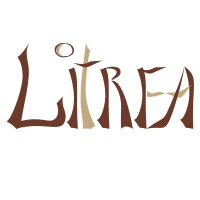

ton univers littéraireLe guide de Litrea : où trouver quoi, et comment. Repère-toi grâce au sommaire, ou lis-le en entier une fois pour découvrir ce que tu ne savais pas encore possible.
Dernière mise à jour : septembre 2026
Tout se joue depuis les six icônes tout en bas de l'écran (elles n'ont pas de texte, seulement une icône) :
Deux autres icônes, en haut à droite de l'accueil : un graphique ouvre ton tableau de bord de lecture, et un rond avec un profil ouvre tes réglages.
Depuis l'accueil, touche le premier bouton, Ajouter un livre (icône code-barres). Trois choix s'offrent à toi :
Rapproche-toi un peu, ou touche le bouton de zoom en haut à droite de l'écran de scan (jusqu'à 3×, réglé sur 1,5× par défaut) : certaines éditions ont un code-barres minuscule. Un livre ancien porte parfois deux codes-barres : cherche celui qui commence par 978 ou 979.
Les sources bibliographiques ne sont pas parfaites. Corrige n'importe quel champ à tout moment via Modifier la fiche, depuis la fiche du livre.
Sous ton nom, quatre boutons donnent un accès direct à :
Plus bas : le livre que tu es en train de lire, une citation du jour tirée de tes propres notes, et les actualités littéraires (parutions, prix, portraits d'auteurs). Une fois assez de lectures dans l'année, un bandeau propose ton bilan de l'année.
L'icône étagère (2ᵉ en bas) réunit tous les livres que tu as scannés ou saisis, quel que soit leur statut de lecture. Une barre de recherche et des filtres t'aident à en retrouver un précis.
L'icône livre ouvert (3ᵉ en bas) affiche un calendrier : chaque jour montre le ou les livres que tu lisais à ce moment-là. Change de mois ou d'année en haut de l'écran.
Deux informations distinctes, volontairement séparées, réglables depuis la fiche d'un livre :
Un livre emprunté que tu es en train de lire porte donc les deux à la fois : provenance Emprunté, statut En cours. Le tableau de bord (icône graphique de l'accueil), lui, ne compte que les livres marqués Lus : c'est ton bilan de lecture, pas ton inventaire.
Touche un livre, où que tu le voies dans l'app, pour ouvrir sa fiche. Touche n'importe quel champ pour le corriger ou le compléter via Modifier la fiche. En faisant défiler la fiche, tu retrouves aussi tes citations et notes sur ce livre, les mots que tu y as appris, les outils de prêt et de don, et pour une série, ta progression dans les tomes.
L'icône carnet (4ᵉ en bas) ouvre Mes carnets, sept entrées :
| Entrée | Ce qu'elle contient |
|---|---|
| Mes mots appris | ton vocabulaire, avec quiz |
| Mes citations | tes citations, avec quiz |
| Mes séries | ta progression dans chaque série |
| Mes thèmes | tes livres regroupés par thème |
| Mes notes | tes notes de lecture libres, cherchables |
| Prix littéraires | le catalogue des prix, par catégorie et par année |
| Mouvements littéraires | les grands courants, avec les œuvres qui s'y rattachent |
Depuis Mes citations ou Mes mots appris (dans Carnets), tu peux :
Quand tu notes une citation ou un mot, le livre que tu es en train de lire est proposé en premier dans la liste « Choisir un livre », puisque c'est presque toujours de là qu'ils viennent.
L'icône mallette (5ᵉ en bas) ouvre un annuaire du catalogue complet, pas seulement tes livres, avec trois onglets : Auteurs, Éditeurs, Traducteurs. La fiche d'un auteur réunit tout son catalogue Electre : ses parutions à venir, les autres livres à découvrir, et ceux déjà dans ta bibliothèque.
L'icône silhouettes (6ᵉ en bas) ouvre ton cercle littéraire, avec trois entrées :
Depuis la fiche d'un livre, indique que tu le prêtes ou que tu le donnes. Litrea garde la trace de qui l'a, et te rappelle les prêts en cours dans ton profil.
L'icône profil, en haut à droite de l'accueil, ouvre tes réglages. Elle centralise aussi tes prêts, emprunts, dons et cadeaux reçus.
Litrea est gratuite pendant le premier mois suivant ton inscription. Passé ce délai, un abonnement mensuel ou annuel est nécessaire pour continuer à utiliser l'application.
L'abonnement est à renouvellement automatique, résiliable à tout moment depuis les réglages de ton compte Apple ou Google (le mois ou l'année en cours reste dû).
Tout se passe dans ton profil (icône profil, en haut à droite de l'accueil), en bas de l'écran : les liens vers nos Conditions Générales d'Utilisation et notre Politique de confidentialité, juste au-dessus du bouton Supprimer mon compte.
Une question qui ne trouve pas sa réponse ici ? Écris-nous à contact@litrea.fr.